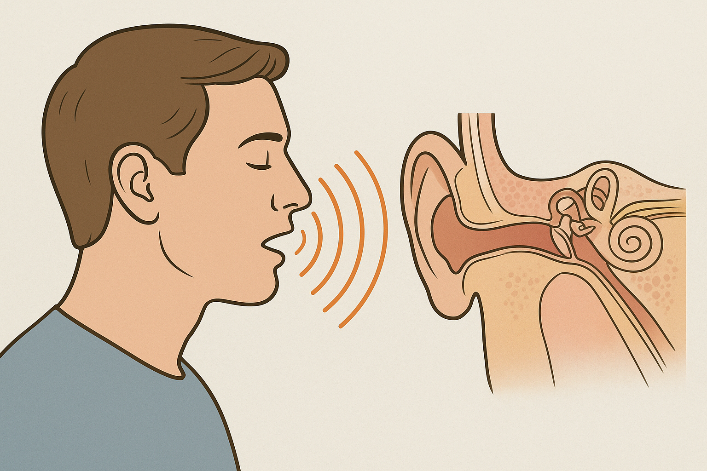
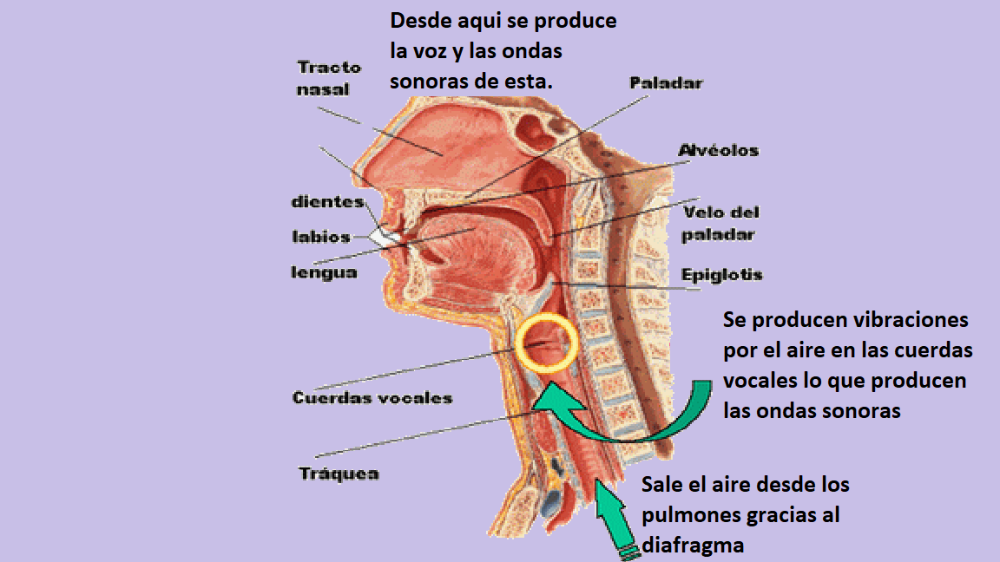

Efecto Doppler
El efecto Doppler ocurre cuando la frecuencia percibida de una onda cambia debido al movimiento relativo entre la fuente y el observador.
Donde:
• \( f \) = frecuencia real emitida
• \( v \) = velocidad del sonido en el aire (≈ 340 m/s)
• \( v_o \) = velocidad del observador
• \( v_s \) = velocidad de la fuente
Ejemplo: Una ambulancia se acerca a 30 m/s con sirena de 500 Hz.
\[ f' = 500 \times \frac{340}{340 - 30} = 500 \times \frac{340}{310} \approx 548 \text{ Hz} \]
El observador escucha un tono más agudo.

Ondas Estacionarias
Las ondas estacionarias se forman cuando dos ondas de igual frecuencia y amplitud viajan en direcciones opuestas y se superponen, generando nodos (puntos fijos) y antinodos (máxima vibración).
Donde:
• \( y(x,t) \) = desplazamiento de la onda en la posición \(x\) y el tiempo \(t\)
• \( A \) = amplitud de la onda
• \( k = \tfrac{2\pi}{\lambda} \) = número de onda
• \( x \) = posición a lo largo de la cuerda
• \( \omega = 2\pi f \) = frecuencia angular
• \( t \) = tiempo
• \( \lambda \) = longitud de onda
• \( f \) = frecuencia
Ejemplo: Una cuerda de 1 m fija en ambos extremos puede vibrar en su modo fundamental con \( \lambda = 2L = 2 \) m.
Si \( v = 100 \, m/s \), entonces:
\[ f = \frac{v}{\lambda} = \frac{100}{2} = 50 \text{ Hz} \]
¿Cómo oscila una cuerda en un instrumento musical?
Una cuerda fija en sus extremos solo puede vibrar de manera que en los puntos de sujeción se formen nodos (puntos sin movimiento). Entre ellos aparecen antinodos (puntos de máxima amplitud). Estos patrones de vibración se llaman modos normales o modos armónicos.
El modo más sencillo es la frecuencia fundamental o primer armónico, en la cual la cuerda vibra como un solo segmento. Los siguientes modos corresponden a múltiplos enteros de esa frecuencia y producen los armónicos superiores.
La longitud de onda de cada armónico en una cuerda de longitud L es:
- 1er armónico (fundamental): \(\lambda_1 = 2L\)
- 2do armónico: \(\lambda_2 = L\)
- 3er armónico: \(\lambda_3 = \tfrac{2}{3}L\)
- n-ésimo armónico: \(\lambda_n = \tfrac{2L}{n}\)
La frecuencia de cada armónico se calcula con la relación:
\[ f_n = \frac{n \cdot v}{2L} \]
Donde:
• \( f_n \) = frecuencia del n-ésimo armónico
• \( n \) = número del armónico (1, 2, 3, …)
• \( v \) = velocidad de propagación de la onda
• \( L \) = longitud de la cuerda
Ejemplo
Una cuerda de guitarra mide \(0.65 \, m\) y la onda se propaga en ella a \(v = 130 \, m/s\).
La frecuencia fundamental será:
\[ f_1 = \frac{1 \cdot 130}{2 \cdot 0.65} = 100 \, Hz \]
Velocidad de las ondas en una cuerda
La velocidad de propagación de una onda en una cuerda depende de dos factores: la tensión aplicada y la densidad lineal de masa de la cuerda.
\[ v = \sqrt{\frac{T}{\mu}} \]
Donde:
• \( v \) = velocidad de propagación de la onda
• \( T \) = tensión de la cuerda (N)
• \( \mu \) = densidad lineal de masa (kg/m), con \( \mu = \tfrac{m}{L} \)
• \( m \) = masa de la cuerda
• \( L \) = longitud de la cuerda
Modos Normales en Tubos Sonoros
Tubo cerrado
Donde:
• \( f_n \) = frecuencia del n-ésimo armónico
• \( n \) = número impar del armónico (1, 3, 5, …)
• \( v \) = velocidad del sonido en el aire
• \( L \) = longitud del tubo

Tubo abierto
Donde:
• \( f_n \) = frecuencia del n-ésimo armónico
• \( n \) = número natural del armónico (1, 2, 3, …)
• \( v \) = velocidad del sonido en el aire
• \( L \) = longitud del tubo

¿Cómo se produce la voz? ¿Cómo llega el sonido a nuestros oídos?
La voz se genera gracias a la vibración de las cuerdas vocales en la laringe, que funcionan como una cuerda vibrante y un tubo resonante al mismo tiempo. El aire proveniente de los pulmones pone en vibración las cuerdas vocales, y la cavidad bucal y nasal actúan como resonadores que amplifican y modifican el sonido.
Una vez producido, el sonido viaja en forma de ondas a través del aire y llega a nuestros oídos. Allí se produce un proceso en tres etapas:
- Oído externo: El pabellón auricular y el conducto auditivo captan y dirigen las ondas sonoras hacia el tímpano.
- Oído medio: El tímpano vibra y transmite esas vibraciones a través de los huesecillos (martillo, yunque y estribo), que amplifican la señal.
- Oído interno: Las vibraciones llegan a la cóclea, donde las células ciliadas transforman la energía mecánica en impulsos nerviosos que viajan por el nervio auditivo hasta el cerebro.
Gracias a este proceso podemos no solo percibir la intensidad y tono de la voz, sino también distinguir timbres, palabras y emociones.
Ejemplo: Supongamos que las cuerdas vocales producen un sonido fundamental de 120 Hz.
Los armónicos generados son múltiplos enteros: 240 Hz, 360 Hz, 480 Hz, etc. La cavidad bucal amplifica ciertos armónicos, lo que forma los formantes y permite distinguir las vocales.
En conclusión, la voz es el resultado de un sistema complejo de vibraciones, resonancias y procesamiento auditivo que convierte simples ondas sonoras en comunicación humana. Los siguientes videos lo explican de manera más clara y visual:


Resumen
- El efecto Doppler explica cómo la frecuencia cambia si hay movimiento relativo entre fuente y observador.
- Las ondas estacionarias se forman en cuerdas y tubos por la superposición de ondas en direcciones opuestas.
- Una cuerda en un instrumento oscila en modos normales, generando armónicos que forman la música.
- La velocidad en una cuerda depende de la tensión y de la densidad lineal de masa.
- Los tubos sonoros (abiertos o cerrados) presentan diferentes frecuencias de resonancia.
- La voz humana se produce por la vibración de cuerdas vocales y la resonancia en las cavidades bucales y nasales.